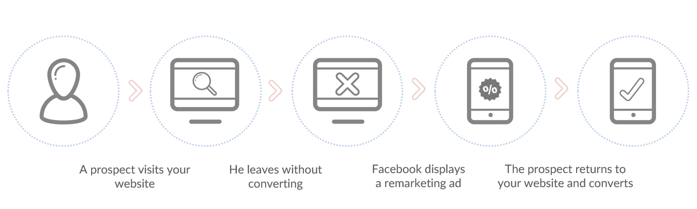
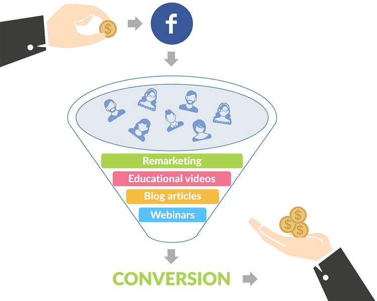

There are many business owners out there. You are maybe one of them. And as the others, you are probably also having the same question in your mind. How do I get customers? Where I should get them? How do I get my product in front of my audience? Well, you may have heard about Facebook advertising, right? And you probably also heard that it is not effective? Well, it’s not your fault, that you may be thinking this. Those who are claiming this, are probably the ones who tried it once, expecting big results which did not came and now they are saying that it’s impossible to sell on Facebook. But it’s not their fault either. It’s easy to get to that conclusion if all you do on Facebook is just to boost your post.
The truth is that is not that easy but there is hope. And actually it may not be nearly as hard as you think. All you need is a budget (no worries, you can play with even with a small budget) and you can get started with the following pointers.
Facebook Business Page
This one is the obvious starting point. You cannot do business on Facebook without Facebook business page. And you will definitely need one to start with advertising. Just go over to this link and you may just set up one right away. It’s pretty easy. Just select the category of your business, tell Facebook more about what you or your business are doing, upload your logo and you are ready to go. From now on you can build your audience on Facebook, deliver valuable content to them, engage with them and, of course, sell to them.
Get Facebook Advertising Account
When talking about selling to your fans or to any audience on Facebook, I mean selling mainly via Facebook ads. You can set up your advertising account at no cost. Facebook has plenty of options for promoting your brand and business and you will probably want to start with one of the following objectives:
- Clicks to website
- Website conversions
- Offer claims
Objectives help you to optimize your campaign so it’s important to know what you want to achieve with your campaign. Do you want to drive traffic to your website? Then choose Clicks to Website as an objective. Do you want to increase number of sold products? Then you should be optimizing your ad to get more website conversions.
Do you want to reach people who live in or have recently visited the area around your business location? Well, Facebook can definitely help you with that. There are plenty of objectives you can choose from for your ads and if you are unsure of what to do or you are simply busy, you can always delegate so somebody else can take of your advertising account and you will just get weekly report. But the biggest reason why you should be using Facebook Ads are in the paragraphs below.
Get Your Offer in Front of the Right Audience
Targeting options Facebook is offering to all advertisers are simply awesome. There are almost an infinite number of targeting combinations you can use for in your campaigns however, who you are targeting, should be always used based on your objective.
Do you want to sell more products? Then you should be targeting people who already know your brand or know what you are doing, like your fans or people who visited your website. Why? Well, if you do not know me or do not trust me, how likely you are going to whip out a credit card to buy a product from me? You are right; it’s very unlikely.
On the other hand if you just want to raise brand awareness or get some exposure, then targeting people who already know you is not such a good idea. So what about targeting audience which is not connected to your brand but, based on their interests and demographic, may be interested in what you have to say? Or what about targeting the audience similar to your fans or an audience similar to your website visitors? Targeting shouldn’t be that hard if you know your audience and of course if you know also the objective of your campaign. So just keep that in mind.
Target Your Existing Clients
One of the cool features Facebook is offering is the ability to import your email database and display your ads to people on your email list. Of course, you may be asking why on the earth would you do that if you are already sending your monthly newsletter to your customers or subscribers. I am getting a lot of newsletters too. Do I read them? Sometimes. Do I click the links inside them? Well, rarely. The same may be true for your clients and subscribers. Your email may go directly to their spam folder or it may get lost and buried among hundreds of similar emails. That’s why targeting your email list makes sense. Besides, these people already know you and trusted you enough to leave their email with you, so they are more likely to convert if you make the right offer.
You can even go further and segment your email list to people who opted-in for your e-book but never purchased from you; or people who, for example, purchased specific product and now they might be interest in the upgrade you are offering. It’s totally up to you. Just know that you have this possibility.
Use Remarketing
Never heard of remarketing? Well, now it’s time to get familiar with it. It’s really awesome and it basically lets you advertise to people who have visited your website or even specific page on your website and therefore shown interest in your product or service. How cool is that! Display an ad to somebody who is genuinely interested in your product.

How you can use it? There are number of ways. Imagine a potential customer who visited your website skimming through the products and even added some of them to the cart. But he did not finish the order. That’s pity. It would be even more if you could not follow up. But now you can. In a sense. You can go ahead and target your ad only to users who did not finish the order. You can tailor your message specifically to these users and you can even offer them a discount so they are more willing to go and finish the purchase.
You can also segment your website visitors according what section of your website they visited or only target visitors of specific page or you can build your fan page around all website visitors. You have the capability to do that and it would be shame not to use it.
Track Your Conversions
Whatever amount you spend on your Facebook ads, you should always track what you are getting out of it. You should forget about CTR, impressions or clicks your ad receive right away. Why? Because it doesn’t matter! It’s pretty useless to me if my ad received tons of clicks, but none of those clicks led to conversions. So instead of focusing on the wrong metrics, you should be focusing on those that matter to your business. And Facebook does a pretty good job in helping you to determine which of your ads are actually leading to revenue.
Installing a conversion tracking pixel on your site so you will be able to track all conversions is not an option. It’s a must! You should definitely install a conversion tracking pixel on your site. Otherwise you may be throwing your money away. Conversion tracking will allow you to track whether the user performed the desired action you set as an objective for your ad, whether it is a purchase, registration to webinar or an e-book download. And you can even set the conversion value so you can better track ROI.
Test, Track, Measure, Adapt
Everything can be tested! That’s the fact. And you should be testing as well. The devil is in the details and even the smaller element can drastically improve your marketing performance. Sometimes it is the change of the picture which boosts the performance of your ad. The other time it can be text on call to action button or the position of the button itself. Or you may find out that women between 25 and 39 respond to your ad 2x better than men of the same age. It’s all about testing. And tracking as well. Luckily for you, Facebook ads reports make the whole work of tracking and measuring your campaigns a lot easier. They will allow you to display all relevant data and learn about what actually works and doesn’t work. And when you have all the data, you can easily adapt and optimize your advertising for success.
Don’t Sell on Facebook
I bet you didn’t see this one coming! Ok, let me re-phrase it. You shouldn’t sell to your Facebook audience at first. It may work for some of you but usually it doesn’t. And it makes sense. If you are trying to attract new audience who never heard of you, expecting them to give their credit card number over to you and buy from you, it’s very unlikely that you will succeed. Instead you should be focusing in growing your brand awareness and getting more exposure. You can run ads to get more page likes or to promote interesting and valuable content to people who never heard of you. That’s why I am saying you shouldn’t sell… at first. Instead of selling, focus on building a relationship with your fans and increasing trust by giving them additional value. It requires a bit more of work but it’s worth it! Once you become an authority to these people, selling your services and products will become way easier.

Bring Theory to Practice
I could continue diving deeper into the importance of the above mentioned points. But for now, the key getaway is that selling on Facebook is possible and Facebook ads can be vital for your success. However like everything else it requires a bit of work.
Now it’s your turn! How do you promote or sell your products or services on Facebook? Are the using some of the tactics above and if so, are they working for you? Also don’t be afraid to ask a question in case you encountered a problem with your ads or something is not clear. I would love to hear your stories of using ads on Facebook. Share below!